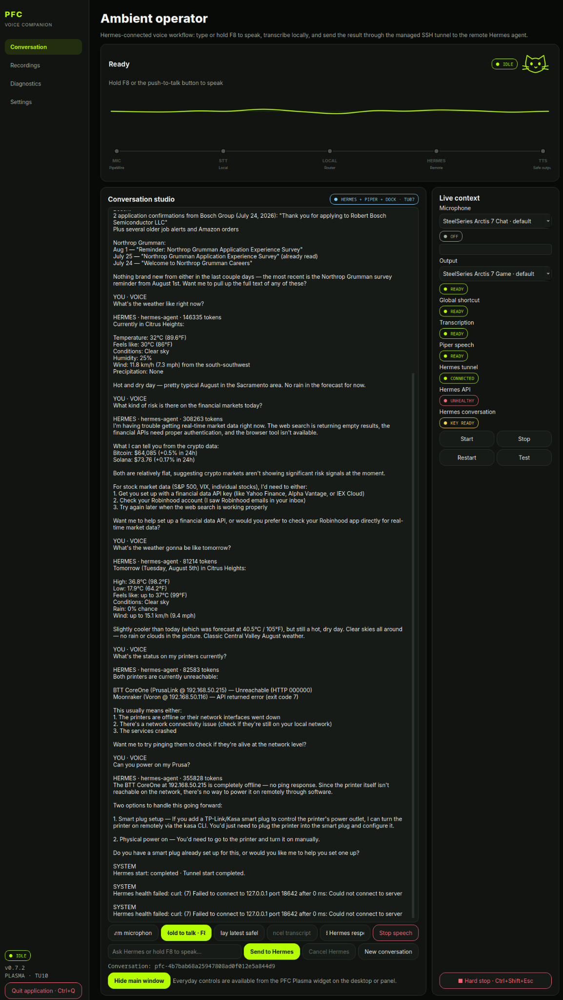
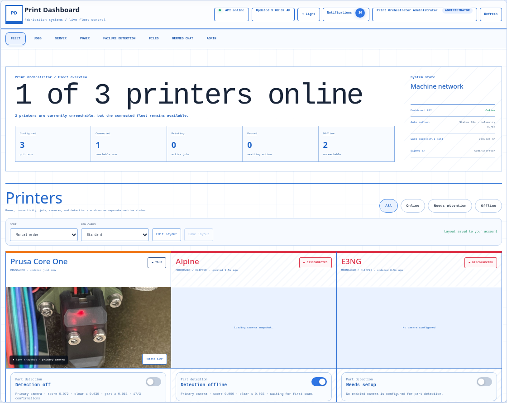
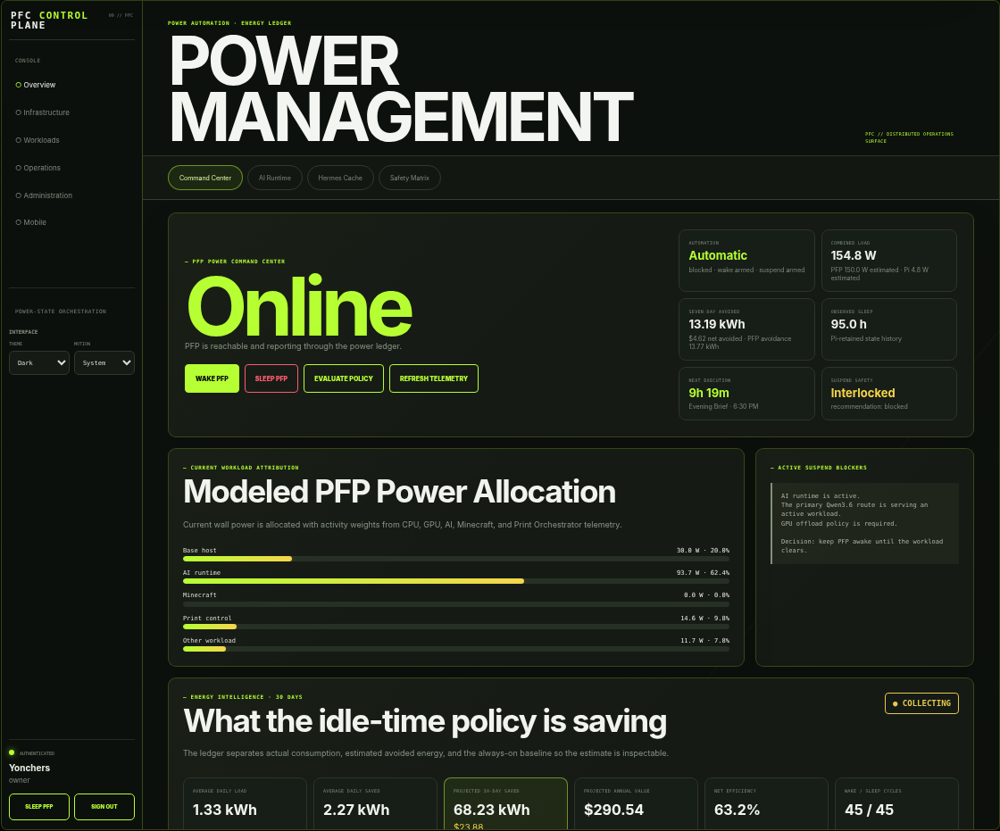
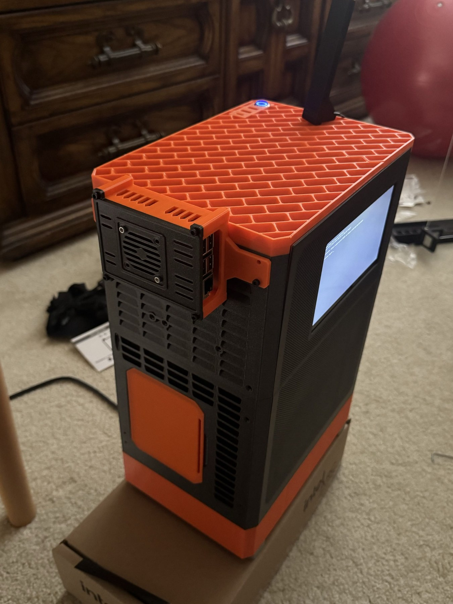
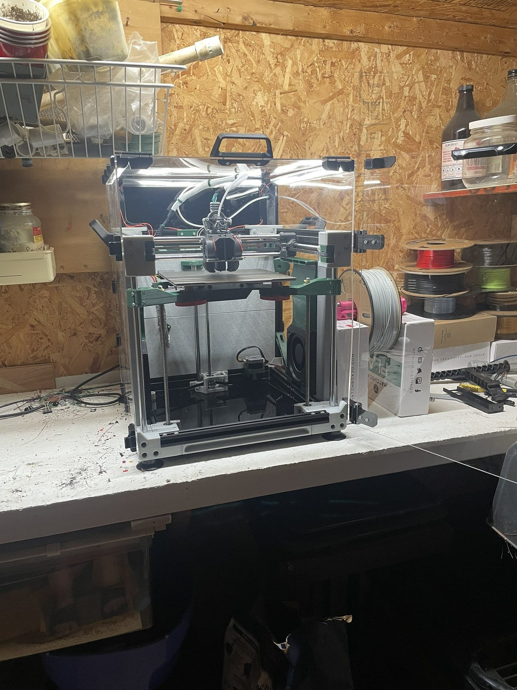
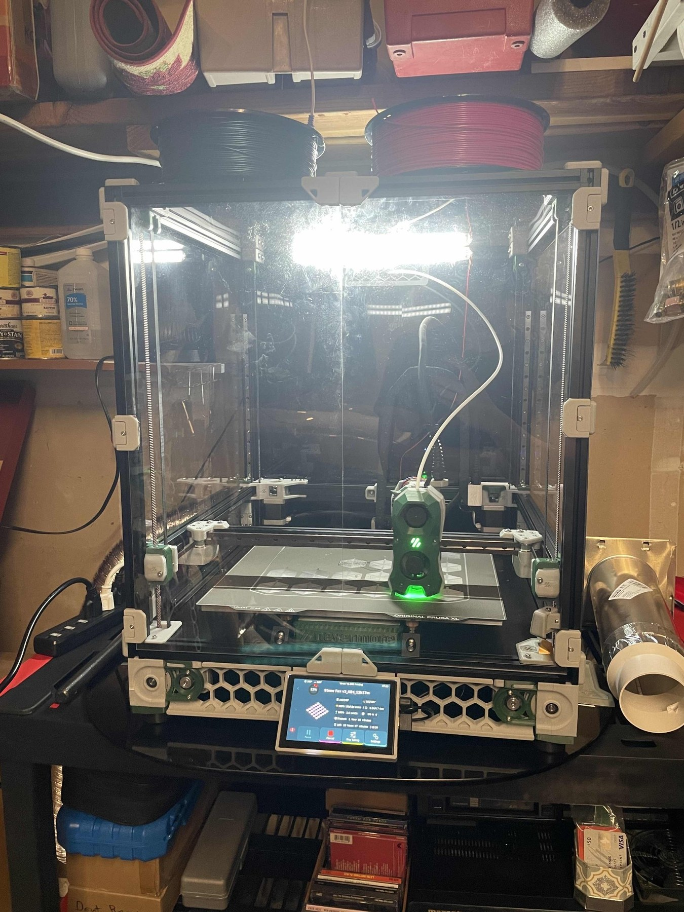
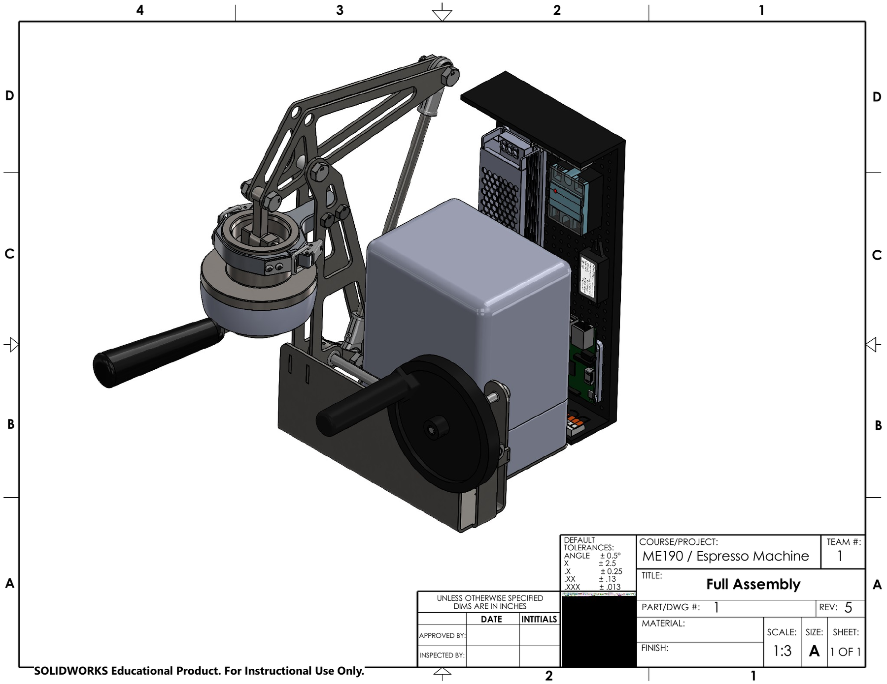
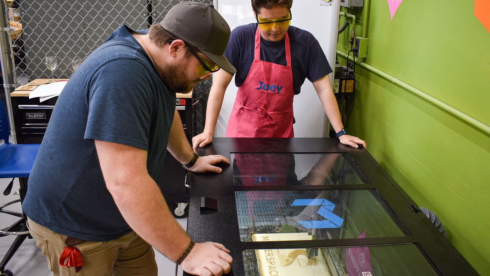

Joseph Dwyer · Mechanical Engineering · Automation
I build machines, automation, and local AI systems that work together.
My work connects mechanical design, fabrication, controls, test engineering, and local AI—from custom printers and lab fixtures to the software that monitors, powers, and automates them.
ENGINEERING PORTFOLIO
JD
design / integrate / verify
LOCAL AI
MOTION
CONTROLS
FABRICATION
TEST
Connected engineering systems
The software, AI, and hardware are designed as one stack.
llama.cpp runs the local models, Hermes coordinates work, PFC manages the server, and Print Orchestrator turns automation into safe actions on the printer fleet.
System architecture
One local stack connects inference, automation, power, and physical machines.
Each layer has a defined responsibility. AI models do not reach hardware directly; they act through narrow, inspectable control interfaces.
AI automation frontend
One control layer for printers and AI-driven production.
Print Orchestrator unifies PrusaLink and Moonraker/Klipper machines, then exposes the state and controls Hermes needs for CAD, slicing, power, preflight, dispatch, and monitoring.
- OpenSCAD generation and a modified OrcaSlicer CLI form the prototype prompt-to-print path
- Part detection can block a new job when an object remains on the bed
- A modified Obico container can send AI failure warnings through Discord
- Kasa smart plugs expose power telemetry and safe power actions to Hermes automations
Interactive portfolio simulation · live endpoints and machine actions are disconnected
PDPrint Dashboardfabrication systems / live fleet control
API online
Updated 9:08:37 AM
Notifications 36
Print Orchestrator Administrator ADMINISTRATOR
Print Orchestrator / Fleet overview
1 of 3 printers online
Two printers are currently unreachable, but the connected fleet remains available.Printers
Power, connectivity, jobs, cameras, and detection are shown as separate machine states.
Prusa Core One
PRUSALINK · updated just now ● live snapshot · primary camera
● live snapshot · primary cameraPart detection
Detection off
Primary camera · score 0.079 · clear ≤ 0.030 · part ≥ 0.065 · 17/3 confirmations
Power
ON
Prusa Core One Outlet · 18.3 W · updated now
Elapsed
—Remaining
—Estimated total
—
—Remaining
—Estimated total
—
Alpine
MOONRAKER / KLIPPER · updated 9.5s agoLoading camera snapshot…
Part detection
Detection offline
Primary camera · score 0.000 · clear ≤ 0.035 · waiting for first scan.
Power
PLUG OFFLINE
Alpine Outlet · last update 9s ago
Klipper console card
Show a movable console on the Fleet pageElapsed
—Remaining
—Estimated total
—
—Remaining
—Estimated total
—
E3NG
MOONRAKER / KLIPPER · updated 8.5s agoNo camera configured
Part detection
Needs setup
No enabled camera is configured for part detection.
Power
NOT MAPPED
No Kasa plug is mapped to this printer.
Klipper console card
Show a movable console on the Fleet pageElapsed
—Remaining
—Estimated total
—
—Remaining
—Estimated total
—
Print Orchestrator / Power observation
Fleet and server power history
Kasa smart-plug telemetry keeps device state, demand, and energy visible beside printer controls.Combined average power
24-hour observed demand · offline gaps are preservedAlpine outletprinter · smart plug unavailable
Plug offlineCurrent—Average—Peak—Energy0.000 kWh
No valid samples are available in the selected range.
B70 serverserver · monitored outlet
Outlet onCurrent100.7 WAverage141.8 WPeak322.0 WEnergy3.121 kWh
The server outlet supplies the majority of the observed load.
Prusa Core One outletprinter · monitored outlet
Outlet offCurrent0.0 WAverage0.03 WPeak22.7 WEnergy0.001 kWh
Power state can be controlled through Print Orchestrator or a Hermes automation.
Power and runtime control
PFC keeps the AI server awake for work and asleep when idle.
A low-power Pi retains wake protection, schedules, status, and recovery logic while the main server is suspended.
Sleep time is observed from retained state history. Avoided energy and dollar values remain estimates until direct host metering is added.
- Checks active AI, Minecraft, print-control, and background workloads before suspend
- Keeps Hermes schedules and wake protection cached on the low-power Pi
- Reconciles llama.cpp runtimes and GPU offload after wake
- PFC Top provides a physical server-side monitoring interface
POWER AUTOMATION · ENERGY LEDGER
POWER MANAGEMENT
— PFP POWER COMMAND CENTER
Online
PFP is reachable and reporting through the power ledger.— CURRENT WORKLOAD ATTRIBUTION
Modeled PFP Power Allocation
Current wall power is allocated with activity weights from CPU, GPU, AI, Minecraft, and Print Orchestrator telemetry.— ENERGY INTELLIGENCE · 30 DAYS
What the idle-time policy is saving
The ledger separates actual consumption, estimated avoided energy, and the always-on baseline so the estimate is inspectable.ActualAvoidedBaseline
Measurement note: most PFP energy is currently estimated from configured wattage baselines. A direct meter source will improve attribution and savings accuracy.
— RUNTIME FLEET
— PRIMARY ROUTE · ADOPTED SYSTEMD SERVICE
Qwen3.6-35B-A3B-UD-Q5_K_XL
● endpoint ready- Endpoint
- Primary local route
- Backend
- llama.cpp GGUF
- Context
- 131072
- GPU layers
- 99
- Identity source
- Live /props · authoritative
— AUXILIARY ROUTE · ADOPTED SYSTEMD SERVICE
gemma-4-E4B-it-UD-Q4_K_XL
● endpoint ready- Endpoint
- Auxiliary local route
- Backend
- llama.cpp GGUF
- Context
- 131072
- GPU layers
- 0
- Identity source
- Live /props · authoritative
— LIVE INFERENCE ACTIVITY
Prompt and generation telemetry
Endpoint telemetry separates prompt processing, queued work, and generation without rescanning the model inventory.— WAKE & GPU RECOVERY
Runtime reconciliation
Qwen is only accepted as healthy after endpoint, process, model identity, and required Intel GPU offload checks pass.Qwen3.6-35B-A3B-UD-Q5_K_XL: GPU offload verification is required before the runtime can be accepted.
— HERMES CRON SCHEDULE CACHE
Wake protection retained on the Pi
Cached jobs stay visible and continue protecting scheduled execution while PFP is asleep or temporarily unreachable.| Job | Execution | Wake dispatch | Protected until |
|---|---|---|---|
| Evening Brief | 8/13/2026, 6:30 PM | 6:20 PM | 6:50 PM |
| nightly-data-scan | 8/14/2026, 2:00 AM | 1:50 AM | 2:20 AM |
| Morning Brief | 8/14/2026, 7:00 AM | 6:50 AM | 7:20 AM |
| weekly-side-hustle-intel | 8/14/2026, 7:00 AM | 6:50 AM | 7:20 AM |
| Monthly Deep Analysis | 9/1/2026, 1:00 AM | 12:50 AM | 1:20 AM |
— DAILY AUTO-ON / AUTO-OFF TIMELINE
Thursday, August 13
Green shows observed online time. Yellow protects scheduled jobs. Dark space is eligible sleep time.Planned
Observed
Planned online 0.5 h · sleep 23.5 h · projected combined 0.277 kWh including Pi 0.084 kWh · net avoided 3.32 kWh ($1.16).
— SUSPEND DECISION ENGINE
Subsystem Eligibility Matrix
Unknown and stale states are explicit. With the safety default enabled, either state blocks automatic suspend.— PREDICTIVE RECOMMENDATIONS
Advisory Schedule Intelligence
Recommendations come from retained wake and sleep transitions and never change policy without an explicit save.PFP often becomes idle near 17:15. Review the end of that day's availability window.
41% confidence · 13 observations · advisory onlyPFP often wakes near 10:45. Consider an availability window starting 10 minutes earlier.
41% confidence · 13 observations · advisory onlyHermes / local agent layer
The agent layer between my local models and the systems I use.
I run Nous Research's Hermes Agent locally around llama.cpp. It routes work to my manager and worker models, then gives those models controlled tools for PFC, Print Orchestrator, desktop utilities, schedules, Discord, and engineering troubleshooting.
Printer state, power actions, server status, scheduled jobs, notifications, and structured tool calls.
PFC Pulse adds push-to-talk voice control with Whisper and Piper, while PFC Command keeps core server state visible.
Cross-machine recovery plus meeting transcription, translation, summaries, action items, and calendar preparation.

MUSE MANAGERHERMESQWEN WORKER
Selected work
Projects spanning machines, automation, local AI, testing, and manufacturing.
Open any card for the engineering decisions, documentation gallery, results, current status, and upstream references.

01AI automation frontend
Print Orchestrator
Hermes-to-printer workflows, fleet state, power, part detection, and failure monitoring
02Power and runtime control
PFC Supervisor
Safe server sleep, schedule protection, runtime recovery, energy reporting, and access control
03Local AI infrastructure
B70 / PFP AI server
llama.cpp inference, production model profiles, benchmark research, and operational tooling
04CoreXY conversion
E3NG CoreXY conversion
Complete machine rebuild, Klipper, sensing, networking, calibration, and commissioning
05Enclosed CoreXY system
Voron 2.4
Assembly, alignment, technical materials, tuning, maintenance, and functional parts 06
06Small-business product development
Metuned digital dash
Race electronics, enclosure design, PCB packaging, cooling, service access, and product direction 07
07Leadership and fabrication
Sierra College Motorsports
Race preparation, repairs, events, sponsorship, community funding, and trackside execution
08ME190 senior design
Hybrid hand-actuated espresso machine
Full assembly CAD, mechanism, controls integration, testing targets, and SendCutSend support 09
09Professional test engineering
UEI energy-efficiency testing
Controlled fixtures, airflow and CFM measurement, instrumentation, repairs, and documentation 10
10Industrial robotics coursework
ABB and Rexroth robotics lab
Robot hardware, controller state, I/O, emergency-stop behavior, and safe lab execution
11Work experience
Manufacturing and makerspace experience
Equipment support, CAD/CAM, user training, production finishing, inventory, and handoffLocal inference and benchmarking
llama.cpp runs the B70/PFP model stack.
I keep standardized throughput, broad speculative-decoding research, and the configurations I actually deploy as separate views.
Muse-Glimmer 30B Q5_K_XL
131K context · Q8 KV · medium reasoning · DFlash n2 / p0.30
29.2 tok/s~71.2% acceptance · ~36% over native
Qwen3.6 35B-A3B Q5_K_XL
131K context · q4_1 KV · custom tool template · native decode
68–71 tok/sMTP tested; native selected
Current normal reference: SYCL · pp512 + tg128 · 3 repetitions · -ngl 99 · llama.cpp build 10369.
n2 was usually useful, n4 won for Gemma 26B-A4B, and n8 was consistently harmful.
Experience
Engineering habits built in labs, shops, product work, and motorsports.
University Enterprises / Sacramento State
Lab Assistant — Appliance Auditing
Controlled test environments, airflow instrumentation, data collection, documentation, and equipment support.Metuned LLC
Co-founder / Chief Design Officer
Enclosure development, electronics packaging, product direction, prototypes, and motorsports application.Sierra College Motorsports
Treasurer → Vice President → President
Race preparation, events, funding, sponsorship, recruitment, fabrication support, and trackside execution.Sierra College Makerspace
Makerspace Technical Assistant
3D printing, CNC, laser systems, CAD/CAM, user training, troubleshooting, maintenance, and shop safety.Vanquish Products / ASB Products
Inventory Manager / Factory Support
Inventory, production staging, deburr, polishing, inspection, anodizing and laser-etch prep, packaging, and shipping.Contact
Open to hands-on engineering roles and collaborative technical work.
I am most interested in automation, manufacturing, controls, test engineering, product development, and equipment-support work where practical troubleshooting matters.